ks = Data.get_ks_dataset()PSSM
Functions related with PSSMs
Setup
from katlas.pssm import *PSSM
get_prob
get_prob (df:pandas.core.frame.DataFrame, col:str, aa_order=['P', 'G', 'A', 'C', 'S', 'T', 'V', 'I', 'L', 'M', 'F', 'Y', 'W', 'H', 'K', 'R', 'Q', 'N', 'D', 'E', 's', 't', 'y'])
Get the probability matrix of PSSM from phosphorylation site sequences.
This function computes a position-specific probability matrix (PSSM) from a list of aligned phosphorylation site sequences.
For each position \(i\) (e.g., from \(-7\) to \(+7\)), the probability of observing amino acid \(x\) is:
\[ P_i(x) = \frac{\text{count of amino acid } x \text{ at position } i}{\text{total counts at position } i} \]
The following 23 amino acids are included:
- Standard amino acids:
A,C,D,E,F,G,H,I,K,L,M,N,P,Q,R,S,T,V,W,Y
- Modified amino acids:
s,t,y(often used to denote phosphorylatedS,T,Y)
In the output, the modified residues are renamed as: - s → pS
- t → pT
- y → pY
The resulting matrix has: - Rows: Amino acids (including pS, pT, pY), - Columns: Sequence positions (centered on the phosphosite), - Values: Probabilities of each amino acid at each position.
ks_k = ks[ks.kinase_uniprot=='P00519'] # ABL1pssm_df = get_prob(ks_k,'site_seq')
pssm_df.head()| Position | -20 | -19 | -18 | -17 | -16 | -15 | -14 | -13 | -12 | -11 | -10 | -9 | -8 | -7 | -6 | -5 | -4 | -3 | -2 | -1 | 0 | 1 | 2 | 3 | 4 | 5 | 6 | 7 | 8 | 9 | 10 | 11 | 12 | 13 | 14 | 15 | 16 | 17 | 18 | 19 | 20 |
|---|---|---|---|---|---|---|---|---|---|---|---|---|---|---|---|---|---|---|---|---|---|---|---|---|---|---|---|---|---|---|---|---|---|---|---|---|---|---|---|---|---|
| aa | |||||||||||||||||||||||||||||||||||||||||
| P | 0.050061 | 0.048691 | 0.062349 | 0.055489 | 0.046988 | 0.054753 | 0.064787 | 0.055090 | 0.056683 | 0.048272 | 0.052257 | 0.054599 | 0.053974 | 0.043170 | 0.060839 | 0.067138 | 0.049971 | 0.055817 | 0.076968 | 0.049354 | 0.0 | 0.020024 | 0.049645 | 0.125370 | 0.054997 | 0.056872 | 0.057382 | 0.057588 | 0.062048 | 0.053463 | 0.058104 | 0.052728 | 0.051140 | 0.069436 | 0.063164 | 0.057716 | 0.056639 | 0.051072 | 0.050697 | 0.052163 | 0.060703 |
| G | 0.080586 | 0.080341 | 0.069007 | 0.067551 | 0.082530 | 0.070397 | 0.093581 | 0.073054 | 0.077566 | 0.072706 | 0.067102 | 0.077745 | 0.052788 | 0.078060 | 0.070880 | 0.065371 | 0.087008 | 0.073443 | 0.084019 | 0.065217 | 0.0 | 0.091284 | 0.069740 | 0.062685 | 0.070373 | 0.075237 | 0.060371 | 0.072585 | 0.080120 | 0.077157 | 0.072783 | 0.099939 | 0.070856 | 0.071916 | 0.075672 | 0.071518 | 0.064821 | 0.080076 | 0.088720 | 0.062341 | 0.090735 |
| A | 0.080586 | 0.080341 | 0.062954 | 0.054282 | 0.075301 | 0.071600 | 0.070186 | 0.070060 | 0.065632 | 0.070322 | 0.077791 | 0.073591 | 0.053381 | 0.065050 | 0.069108 | 0.071849 | 0.062316 | 0.081669 | 0.063455 | 0.060517 | 0.0 | 0.102473 | 0.084515 | 0.075103 | 0.063276 | 0.075237 | 0.083084 | 0.049190 | 0.053614 | 0.073512 | 0.073394 | 0.064378 | 0.077634 | 0.069436 | 0.072545 | 0.063363 | 0.079924 | 0.088272 | 0.087452 | 0.057888 | 0.070927 |
| C | 0.017094 | 0.012781 | 0.013317 | 0.019903 | 0.012048 | 0.017449 | 0.007798 | 0.014371 | 0.013126 | 0.012515 | 0.023159 | 0.015430 | 0.012456 | 0.014784 | 0.010632 | 0.012956 | 0.014697 | 0.009988 | 0.010576 | 0.008226 | 0.0 | 0.017079 | 0.017730 | 0.023655 | 0.018924 | 0.010664 | 0.016736 | 0.010798 | 0.008434 | 0.010328 | 0.012232 | 0.007357 | 0.017868 | 0.014879 | 0.012508 | 0.011920 | 0.018880 | 0.019546 | 0.014575 | 0.019084 | 0.014058 |
| S | 0.047619 | 0.035910 | 0.046610 | 0.030157 | 0.037349 | 0.042720 | 0.041992 | 0.041916 | 0.034010 | 0.039333 | 0.037411 | 0.031454 | 0.043891 | 0.035482 | 0.024808 | 0.029446 | 0.026455 | 0.016451 | 0.021739 | 0.009401 | 0.0 | 0.019435 | 0.017730 | 0.019515 | 0.031934 | 0.029028 | 0.028691 | 0.034793 | 0.024699 | 0.032199 | 0.029969 | 0.024525 | 0.036352 | 0.047117 | 0.040025 | 0.042033 | 0.040277 | 0.039092 | 0.051965 | 0.041349 | 0.039617 |
Transform PSSM
pSTY2sty
pSTY2sty (string)
Convert pS/pT/pY to s/t/y in a string.
pspa_scale = Data.get_pspa_all_scale()
pspa_scale.head()| -5P | -5G | -5A | -5C | -5S | -5T | -5V | -5I | -5L | -5M | -5F | -5Y | -5W | -5H | -5K | -5R | -5Q | -5N | -5D | -5E | -5pS | -5pT | -5pY | -4P | -4G | -4A | -4C | -4S | -4T | -4V | -4I | -4L | -4M | -4F | -4Y | -4W | -4H | -4K | -4R | -4Q | -4N | -4D | -4E | -4pS | -4pT | -4pY | -3P | -3G | -3A | -3C | ... | 2E | 2pS | 2pT | 2pY | 3P | 3G | 3A | 3C | 3S | 3T | 3V | 3I | 3L | 3M | 3F | 3Y | 3W | 3H | 3K | 3R | 3Q | 3N | 3D | 3E | 3pS | 3pT | 3pY | 4P | 4G | 4A | 4C | 4S | 4T | 4V | 4I | 4L | 4M | 4F | 4Y | 4W | 4H | 4K | 4R | 4Q | 4N | 4D | 4E | 4pS | 4pT | 4pY | |
|---|---|---|---|---|---|---|---|---|---|---|---|---|---|---|---|---|---|---|---|---|---|---|---|---|---|---|---|---|---|---|---|---|---|---|---|---|---|---|---|---|---|---|---|---|---|---|---|---|---|---|---|---|---|---|---|---|---|---|---|---|---|---|---|---|---|---|---|---|---|---|---|---|---|---|---|---|---|---|---|---|---|---|---|---|---|---|---|---|---|---|---|---|---|---|---|---|---|---|---|---|---|
| kinase | |||||||||||||||||||||||||||||||||||||||||||||||||||||||||||||||||||||||||||||||||||||||||||||||||||||
| AAK1 | 0.05845 | 0.01989 | 0.02305 | 0.03702 | 0.03450 | 0.03450 | 0.07720 | 0.12615 | 0.08061 | 0.07014 | 0.03450 | 0.07728 | 0.02557 | 0.02687 | 0.02127 | 0.07760 | 0.04546 | 0.02232 | 0.01299 | 0.01242 | 0.01632 | 0.01632 | 0.04960 | 0.04172 | 0.05015 | 0.05515 | 0.04375 | 0.04836 | 0.04836 | 0.04836 | 0.04851 | 0.05796 | 0.05414 | 0.04062 | 0.04172 | 0.03148 | 0.04015 | 0.06320 | 0.05586 | 0.04898 | 0.03351 | 0.02594 | 0.04375 | 0.02594 | 0.02594 | 0.02648 | 0.08610 | 0.04067 | 0.08888 | 0.05203 | ... | 0.04025 | 0.03142 | 0.03142 | 0.03149 | 0.05264 | 0.07135 | 0.04499 | 0.05735 | 0.04499 | 0.04499 | 0.04715 | 0.02999 | 0.03780 | 0.03378 | 0.03324 | 0.04120 | 0.03718 | 0.05210 | 0.05712 | 0.06965 | 0.04816 | 0.05681 | 0.03131 | 0.02868 | 0.02589 | 0.02589 | 0.02775 | 0.05026 | 0.05618 | 0.05170 | 0.04826 | 0.04482 | 0.04482 | 0.03377 | 0.03321 | 0.03689 | 0.03713 | 0.04186 | 0.04170 | 0.06611 | 0.04482 | 0.06651 | 0.07427 | 0.05082 | 0.04738 | 0.03113 | 0.03657 | 0.02009 | 0.02009 | 0.02161 |
| ACVR2A | 0.02971 | 0.03443 | 0.04180 | 0.03500 | 0.04137 | 0.04137 | 0.04281 | 0.04474 | 0.04266 | 0.03729 | 0.04295 | 0.04137 | 0.05748 | 0.04080 | 0.03651 | 0.03400 | 0.03078 | 0.03837 | 0.06356 | 0.05648 | 0.05605 | 0.05605 | 0.05440 | 0.03341 | 0.03936 | 0.03979 | 0.03950 | 0.03936 | 0.03936 | 0.03893 | 0.03771 | 0.03728 | 0.04130 | 0.04438 | 0.04201 | 0.05406 | 0.03950 | 0.02911 | 0.03276 | 0.03456 | 0.03592 | 0.07456 | 0.06230 | 0.05800 | 0.05800 | 0.04882 | 0.03345 | 0.04351 | 0.03578 | 0.03918 | ... | 0.04447 | 0.04786 | 0.04786 | 0.03799 | 0.04958 | 0.04381 | 0.03914 | 0.03559 | 0.04366 | 0.04366 | 0.04196 | 0.04099 | 0.04529 | 0.04358 | 0.04765 | 0.04839 | 0.04699 | 0.04366 | 0.03419 | 0.02864 | 0.03692 | 0.03877 | 0.04603 | 0.06438 | 0.03840 | 0.03840 | 0.06031 | 0.05559 | 0.03989 | 0.03652 | 0.03791 | 0.04129 | 0.04129 | 0.03784 | 0.04129 | 0.03755 | 0.04855 | 0.03835 | 0.04246 | 0.05867 | 0.04202 | 0.03865 | 0.03601 | 0.04517 | 0.04077 | 0.04693 | 0.04693 | 0.05155 | 0.05155 | 0.04319 |
| ACVR2B | 0.03779 | 0.03665 | 0.04013 | 0.05473 | 0.03779 | 0.03779 | 0.03850 | 0.03134 | 0.03339 | 0.03658 | 0.04282 | 0.04303 | 0.05112 | 0.03672 | 0.03063 | 0.03346 | 0.03531 | 0.04218 | 0.07551 | 0.06381 | 0.05402 | 0.05402 | 0.05268 | 0.03774 | 0.04406 | 0.04048 | 0.04645 | 0.04013 | 0.04013 | 0.03647 | 0.03226 | 0.03640 | 0.03521 | 0.04392 | 0.04273 | 0.04954 | 0.04287 | 0.02663 | 0.02586 | 0.03465 | 0.04013 | 0.07224 | 0.06149 | 0.05538 | 0.05538 | 0.05987 | 0.03044 | 0.03658 | 0.03579 | 0.03882 | ... | 0.04579 | 0.06240 | 0.06240 | 0.04636 | 0.05072 | 0.04699 | 0.04188 | 0.03976 | 0.04268 | 0.04268 | 0.04210 | 0.04297 | 0.05006 | 0.04443 | 0.04122 | 0.05123 | 0.04845 | 0.03727 | 0.02653 | 0.03311 | 0.03888 | 0.03815 | 0.04268 | 0.05423 | 0.04633 | 0.04633 | 0.05130 | 0.05205 | 0.04200 | 0.04735 | 0.03984 | 0.04056 | 0.04056 | 0.03998 | 0.03926 | 0.03832 | 0.03774 | 0.03485 | 0.04244 | 0.05675 | 0.04056 | 0.03261 | 0.03514 | 0.04229 | 0.03846 | 0.05278 | 0.05039 | 0.05502 | 0.05502 | 0.04605 |
| AKT1 | 0.04669 | 0.04599 | 0.04274 | 0.04684 | 0.03995 | 0.03995 | 0.03306 | 0.03368 | 0.03592 | 0.03910 | 0.04235 | 0.03995 | 0.04065 | 0.05056 | 0.07355 | 0.11753 | 0.03801 | 0.03616 | 0.02911 | 0.02911 | 0.03298 | 0.03298 | 0.03314 | 0.04161 | 0.04729 | 0.04091 | 0.03858 | 0.04091 | 0.04091 | 0.03461 | 0.03018 | 0.03430 | 0.04114 | 0.03360 | 0.03593 | 0.04449 | 0.04667 | 0.08455 | 0.12592 | 0.04161 | 0.03679 | 0.02598 | 0.03220 | 0.03508 | 0.03508 | 0.03166 | 0.02642 | 0.02358 | 0.02837 | 0.02748 | ... | 0.01816 | 0.02271 | 0.02271 | 0.02975 | 0.03828 | 0.05555 | 0.03828 | 0.05109 | 0.04422 | 0.04422 | 0.03594 | 0.03852 | 0.03797 | 0.03852 | 0.04750 | 0.04500 | 0.04422 | 0.06000 | 0.07180 | 0.08906 | 0.04430 | 0.04875 | 0.02289 | 0.02469 | 0.02633 | 0.02633 | 0.02656 | 0.07361 | 0.04755 | 0.03900 | 0.03884 | 0.03900 | 0.03900 | 0.03301 | 0.03037 | 0.03692 | 0.03637 | 0.03109 | 0.02789 | 0.04156 | 0.05299 | 0.09151 | 0.08648 | 0.05874 | 0.05187 | 0.03541 | 0.02494 | 0.03141 | 0.03141 | 0.02102 |
| AKT2 | 0.04617 | 0.04732 | 0.04931 | 0.04464 | 0.04095 | 0.04095 | 0.03321 | 0.03206 | 0.03781 | 0.03934 | 0.04203 | 0.04180 | 0.04095 | 0.04671 | 0.07516 | 0.11320 | 0.03796 | 0.03643 | 0.02339 | 0.02416 | 0.03497 | 0.03497 | 0.03651 | 0.04437 | 0.05416 | 0.05245 | 0.04390 | 0.04056 | 0.04056 | 0.03201 | 0.03023 | 0.03644 | 0.04056 | 0.03194 | 0.03668 | 0.03085 | 0.04701 | 0.09053 | 0.10723 | 0.04507 | 0.04181 | 0.02611 | 0.02953 | 0.03435 | 0.03435 | 0.02930 | 0.01778 | 0.01831 | 0.02729 | 0.02649 | ... | 0.02437 | 0.04664 | 0.04664 | 0.04794 | 0.04509 | 0.05588 | 0.04689 | 0.05708 | 0.03918 | 0.03918 | 0.03273 | 0.02719 | 0.03783 | 0.03236 | 0.03790 | 0.03910 | 0.03918 | 0.06127 | 0.07865 | 0.08030 | 0.04247 | 0.04052 | 0.02592 | 0.02577 | 0.03558 | 0.03558 | 0.04434 | 0.07404 | 0.05528 | 0.04158 | 0.04502 | 0.03668 | 0.03668 | 0.02887 | 0.03093 | 0.03315 | 0.03668 | 0.03063 | 0.03446 | 0.03178 | 0.05199 | 0.08844 | 0.07580 | 0.04992 | 0.04770 | 0.02772 | 0.02680 | 0.04196 | 0.04196 | 0.03193 |
5 rows × 230 columns
pspa_scale.columns.map(pSTY2sty)Index(['-5P', '-5G', '-5A', '-5C', '-5S', '-5T', '-5V', '-5I', '-5L', '-5M',
...
'4H', '4K', '4R', '4Q', '4N', '4D', '4E', '4s', '4t', '4y'],
dtype='object', length=230)flatten_pssm
flatten_pssm (pssm_df, use_sty=False)
Flatten PSSM dataframe to dictionary
| Type | Default | Details | |
|---|---|---|---|
| pssm_df | |||
| use_sty | bool | False | if True, use s,t,y instead of pS,pT,pY |
series = pd.Series(flatten_pssm(pssm_df))
series-20P 0.05006
-20G 0.08059
...
20pT 0.01534
20pY 0.01597
Length: 943, dtype: float64recover_pssm
recover_pssm (flat_pssm:pandas.core.series.Series, aa_order=['P', 'G', 'A', 'C', 'S', 'T', 'V', 'I', 'L', 'M', 'F', 'Y', 'W', 'H', 'K', 'R', 'Q', 'N', 'D', 'E', 's', 't', 'y'])
Recover 2D PSSM from flattened PSSM Series.
recover_pssm(series)| Position | -20 | -19 | -18 | -17 | -16 | -15 | -14 | -13 | -12 | -11 | -10 | -9 | -8 | -7 | -6 | -5 | -4 | -3 | -2 | -1 | 0 | 1 | 2 | 3 | 4 | 5 | 6 | 7 | 8 | 9 | 10 | 11 | 12 | 13 | 14 | 15 | 16 | 17 | 18 | 19 | 20 |
|---|---|---|---|---|---|---|---|---|---|---|---|---|---|---|---|---|---|---|---|---|---|---|---|---|---|---|---|---|---|---|---|---|---|---|---|---|---|---|---|---|---|
| aa | |||||||||||||||||||||||||||||||||||||||||
| A | 0.08059 | 0.08034 | 0.06295 | 0.05428 | 0.07530 | 0.07160 | 0.07019 | 0.07006 | 0.06563 | 0.07032 | 0.07779 | 0.07359 | 0.05338 | 0.06505 | 0.06911 | 0.07185 | 0.06232 | 0.08167 | 0.06345 | 0.06052 | 0.00000 | 0.10247 | 0.08452 | 0.07510 | 0.06328 | 0.07524 | 0.08308 | 0.04919 | 0.05361 | 0.07351 | 0.07339 | 0.06438 | 0.07763 | 0.06944 | 0.07255 | 0.06336 | 0.07992 | 0.08827 | 0.08745 | 0.05789 | 0.07093 |
| C | 0.01709 | 0.01278 | 0.01332 | 0.01990 | 0.01205 | 0.01745 | 0.00780 | 0.01437 | 0.01313 | 0.01251 | 0.02316 | 0.01543 | 0.01246 | 0.01478 | 0.01063 | 0.01296 | 0.01470 | 0.00999 | 0.01058 | 0.00823 | 0.00000 | 0.01708 | 0.01773 | 0.02365 | 0.01892 | 0.01066 | 0.01674 | 0.01080 | 0.00843 | 0.01033 | 0.01223 | 0.00736 | 0.01787 | 0.01488 | 0.01251 | 0.01192 | 0.01888 | 0.01955 | 0.01458 | 0.01908 | 0.01406 |
| ... | ... | ... | ... | ... | ... | ... | ... | ... | ... | ... | ... | ... | ... | ... | ... | ... | ... | ... | ... | ... | ... | ... | ... | ... | ... | ... | ... | ... | ... | ... | ... | ... | ... | ... | ... | ... | ... | ... | ... | ... | ... |
| pT | 0.01832 | 0.01278 | 0.01574 | 0.01508 | 0.01446 | 0.01504 | 0.01140 | 0.00719 | 0.00955 | 0.02145 | 0.00950 | 0.02077 | 0.02135 | 0.01892 | 0.02363 | 0.02120 | 0.02528 | 0.02585 | 0.02703 | 0.03467 | 0.04818 | 0.02415 | 0.03605 | 0.02720 | 0.03666 | 0.02844 | 0.01973 | 0.01860 | 0.01747 | 0.02187 | 0.01835 | 0.01962 | 0.01109 | 0.02170 | 0.01501 | 0.01443 | 0.01951 | 0.01450 | 0.01458 | 0.01209 | 0.01534 |
| pY | 0.01648 | 0.01156 | 0.00726 | 0.00905 | 0.01386 | 0.01384 | 0.01320 | 0.01078 | 0.01313 | 0.01967 | 0.01425 | 0.01306 | 0.01483 | 0.01715 | 0.01477 | 0.03121 | 0.02352 | 0.04407 | 0.04465 | 0.03760 | 0.89013 | 0.03828 | 0.04433 | 0.04080 | 0.02543 | 0.02488 | 0.01554 | 0.01800 | 0.01506 | 0.01276 | 0.01284 | 0.01962 | 0.01972 | 0.01116 | 0.01188 | 0.01004 | 0.00944 | 0.01261 | 0.00824 | 0.01908 | 0.01597 |
23 rows × 41 columns
Or recover from PSPA data, where s, t, y will be converted to pS, pT, and pY:
pspa = Data.get_pspa_all_norm()flat_pssm = pspa.loc['AAK1'].dropna()recovered = recover_pssm(flat_pssm)
recovered| Position | -5 | -4 | -3 | -2 | -1 | 0 | 1 | 2 | 3 | 4 |
|---|---|---|---|---|---|---|---|---|---|---|
| aa | ||||||||||
| P | 0.0720 | 0.0534 | 0.1084 | 0.0226 | 0.1136 | 0.0 | 0.0463 | 0.0527 | 0.0681 | 0.0628 |
| G | 0.0245 | 0.0642 | 0.0512 | 0.0283 | 0.0706 | 0.0 | 0.7216 | 0.0749 | 0.0923 | 0.0702 |
| ... | ... | ... | ... | ... | ... | ... | ... | ... | ... | ... |
| pT | 0.0201 | 0.0332 | 0.0303 | 0.0209 | 0.0121 | 1.0 | 0.0123 | 0.0409 | 0.0335 | 0.0251 |
| pY | 0.0611 | 0.0339 | 0.0274 | 0.0486 | 0.0178 | 0.0 | 0.0100 | 0.0410 | 0.0359 | 0.0270 |
23 rows × 10 columns
PSPA is not scaled per position, and the recovered pssm_df also contained copies of pS,pT,pY in zero position (S,T,Y).
So we need to remove the redundant copy in zero position (leave pS/pT/pY only) and scaled to 1 per position.
clean_zero_normalize
clean_zero_normalize (pssm_df)
Zero out non-last three values in position 0 (keep only s,t,y values at center), and normalize per position
This function applies phosphosite-specific cleaning and normalization to a PSSM.
At the center position (\(i = 0\)), only the last three rows of the matrix — corresponding to phosphorylatable residues s, t, and y — are retained. All other amino acid values at position 0 are set to 0.
After masking, the matrix is column-normalized to ensure the probabilities at each position sum to 1:
\[ P_i(x) = \frac{P_i(x)}{\sum_{x'} P_i(x')} \]
norm_pssm = clean_zero_normalize(recovered)
norm_pssm.head()| Position | -5 | -4 | -3 | -2 | -1 | 0 | 1 | 2 | 3 | 4 |
|---|---|---|---|---|---|---|---|---|---|---|
| aa | ||||||||||
| P | 0.058446 | 0.041715 | 0.086100 | 0.017935 | 0.096068 | 0.0 | 0.042649 | 0.040482 | 0.052640 | 0.050260 |
| G | 0.019888 | 0.050152 | 0.040667 | 0.022459 | 0.059704 | 0.0 | 0.664702 | 0.057536 | 0.071346 | 0.056182 |
| A | 0.023054 | 0.055152 | 0.088880 | 0.042695 | 0.032558 | 0.0 | 0.028740 | 0.057613 | 0.044987 | 0.051701 |
| C | 0.037016 | 0.043747 | 0.052025 | 0.046663 | 0.026469 | 0.0 | 0.020542 | 0.052543 | 0.057355 | 0.048259 |
| S | 0.034500 | 0.048356 | 0.041859 | 0.044044 | 0.046089 | 0.0 | 0.013172 | 0.042403 | 0.044987 | 0.044818 |
PSSM of Log odds
get_pssm_LO
get_pssm_LO (pssm_df, site_type)
Get log odds PSSM: log2 (freq pssm/background pssm).
| Details | |
|---|---|
| pssm_df | |
| site_type | S, T, Y, ST, or STY |
Let \(P_i(x)\) be the frequency of amino acid \(x\) at position \(i\) in the input PSSM, and let \(B_i(x)\) be the background frequency of amino acid \(x\) at the same position, derived from a background model corresponding to the specified site type (S, T, Y, or STY).
The log-odds score at each position \(i\) for amino acid \(x\) is computed as:
\[ \mathrm{LO}_i(x) = \log_2 \left( \frac{P_i(x) + \varepsilon}{B_i(x) + \varepsilon} \right) \]
where \(\varepsilon = 10^{-8}\) is a small constant added for numerical stability and to avoid division by zero.
This results in a matrix where:
- Positive values indicate enrichment over background,
- Negative values indicate depletion relative to background,
- Zero indicates no difference from the expected background.
ks_y = ks_k[ks_k.site.str[0]=='Y']pssm_y = get_prob(ks_y,'site_seq')pssm_LO = get_pssm_LO(pssm_y,'Y')
pssm_LO.head()| Position | -20 | -19 | -18 | -17 | -16 | -15 | -14 | -13 | -12 | -11 | -10 | -9 | -8 | -7 | -6 | -5 | -4 | -3 | -2 | -1 | 0 | 1 | 2 | 3 | 4 | 5 | 6 | 7 | 8 | 9 | 10 | 11 | 12 | 13 | 14 | 15 | 16 | 17 | 18 | 19 | 20 |
|---|---|---|---|---|---|---|---|---|---|---|---|---|---|---|---|---|---|---|---|---|---|---|---|---|---|---|---|---|---|---|---|---|---|---|---|---|---|---|---|---|---|
| aa | |||||||||||||||||||||||||||||||||||||||||
| P | -0.206189 | -0.173852 | 0.075945 | 0.048238 | -0.332429 | -0.080529 | 0.276989 | -0.080693 | 0.026617 | -0.274797 | -0.204659 | -0.086080 | -0.319235 | -0.241293 | 0.099099 | 0.123279 | -0.291828 | 0.051970 | 0.168818 | -0.040146 | 0.0 | -2.395029 | -0.280748 | 0.670247 | -0.160627 | -0.023172 | -0.103456 | -0.079543 | -0.118430 | -0.369967 | -0.067107 | -0.348902 | -0.015825 | 0.255922 | -0.115999 | -0.259846 | -0.137766 | -0.144998 | -0.222180 | -0.133928 | -0.190894 |
| G | 0.097859 | 0.271252 | 0.011007 | -0.113312 | 0.335485 | 0.061852 | 0.218183 | 0.002454 | 0.250731 | -0.081028 | -0.032525 | 0.098842 | -0.261324 | 0.224285 | -0.008761 | -0.027760 | 0.170070 | -0.075929 | 0.103874 | 0.094742 | 0.0 | 0.293429 | 0.310956 | 0.226578 | 0.011085 | 0.033597 | -0.061252 | 0.279903 | 0.193058 | 0.086542 | 0.080584 | 0.422964 | 0.204529 | 0.047536 | 0.282739 | 0.057069 | -0.077271 | 0.148160 | 0.305952 | -0.002806 | 0.283357 |
| A | 0.120322 | 0.239305 | -0.034339 | -0.046638 | 0.177100 | 0.036379 | 0.001452 | 0.051452 | 0.004961 | -0.055318 | 0.079303 | -0.001929 | -0.211467 | 0.042708 | 0.032052 | 0.032729 | 0.012878 | 0.335463 | -0.093954 | 0.103941 | 0.0 | 0.636043 | 0.340320 | 0.211844 | 0.119820 | 0.203209 | 0.163758 | -0.364698 | -0.267428 | -0.002023 | 0.138489 | 0.037818 | 0.130627 | -0.054711 | 0.012698 | -0.078897 | 0.138491 | 0.113970 | 0.335229 | -0.048975 | 0.161479 |
| C | -0.015903 | -0.368177 | -0.099183 | 0.393931 | -0.754052 | 0.128316 | -0.936405 | 0.001518 | 0.093670 | -0.116052 | 0.206361 | 0.038752 | 0.140063 | 0.040949 | -0.046152 | -0.302009 | 0.044481 | -0.100333 | -0.063927 | -0.380166 | 0.0 | 0.097430 | 0.399721 | 0.484979 | 0.441042 | -0.655705 | -0.046665 | -0.409536 | -0.689994 | -0.216082 | -0.314273 | -0.756429 | 0.051668 | -0.150990 | -0.144370 | -0.302754 | 0.023962 | 0.196713 | -0.304713 | 0.199967 | -0.160036 |
| S | 0.089429 | -0.534911 | 0.001906 | -0.553952 | -0.411714 | -0.320368 | -0.114390 | -0.246280 | -0.412888 | -0.086541 | -0.156847 | -0.336588 | 0.086873 | -0.321517 | -0.432052 | -0.263282 | -0.591312 | -0.916405 | -0.440907 | -1.495383 | 0.0 | -0.486242 | -0.641287 | -0.594873 | -0.321606 | -0.438704 | -0.382641 | -0.104947 | -0.627112 | -0.376017 | -0.324308 | -0.898365 | -0.137941 | -0.048681 | -0.239158 | -0.089838 | -0.178475 | -0.333529 | -0.215992 | -0.248241 | -0.495879 |
pssm_y[0][pssm_y[0]==1].indexIndex(['pY'], dtype='object', name='aa')pssm_LO[0].sort_values()aa
P 0.0
pS 0.0
...
F 0.0
pY 0.0
Name: 0, Length: 23, dtype: float64PSSMs of clusters
get_cluster_pssms
get_cluster_pssms (df, cluster_col, seq_col='site_seq', id_col='sub_site', count_thr=10, valid_thr=None, plot=False)
Extract motifs from clusters in a dataframe
| Type | Default | Details | |
|---|---|---|---|
| df | |||
| cluster_col | |||
| seq_col | str | site_seq | |
| id_col | str | sub_site | |
| count_thr | int | 10 | if less than the count threshold, not include in the return |
| valid_thr | NoneType | None | percentage of not-nan values in pssm |
| plot | bool | False |
Entropy & Information Content
entropy
entropy (pssm_df, return_min=False, exclude_zero=False, clean_zero=True)
Calculate entropy per position of a PSSM surrounding 0. The less entropy the more information it contains.
| Type | Default | Details | |
|---|---|---|---|
| pssm_df | a dataframe of pssm with index as aa and column as position | ||
| return_min | bool | False | return min entropy as a single value or return all entropy as a series |
| exclude_zero | bool | False | exclude the column of 0 (center position) in the entropy calculation |
| clean_zero | bool | True | if true, zero out non-last three values in position 0 (keep only s,t,y values at center) |
Let \(P_i(x)\) be the probability of amino acid \(x\) at position \(i\) in the PSSM, with \(i \in \{-k, \dots, -1, 0, +1, \dots, +k\}\). The entropy at each position \(i\) is defined as:
\[ H_i = - \sum_{x} P_i(x) \log_2 \left( P_i(x) + \varepsilon \right) \]
where \(\varepsilon = 10^{-8}\) is a small constant added for numerical stability.
If exclude_zero=True, the central position \(i = 0\) is omitted from the entropy calculation.
If clean_zero=True, all values at position \(i = 0\) are zeroed out except for amino acids Serine (S), Threonine (T), and Tyrosine (Y), typically the only possible phospho-acceptors in kinase motif analysis.
If return_min=True, the function returns the minimum entropy across all positions:
\[ H_{\min} = \min_i H_i \]
Otherwise, the function returns the full vector \(\{H_i\}\) for each position \(i\), reflecting how much information (or uncertainty) is contained at each position in the motif.
# get entropy per position
entropy(pssm_df).sort_values()Position
0 0.608195
-1 4.148746
...
-20 4.324109
-11 4.324761
Length: 41, dtype: float64# calculate minimum entropy per pssm
entropy(pssm_df,True,True,True)4.148746038698782entropy_flat
entropy_flat (flat_pssm:pandas.core.series.Series, return_min=False, exclude_zero=False, clean_zero=True)
Calculate entropy per position of a flat PSSM surrounding 0
| Type | Default | Details | |
|---|---|---|---|
| flat_pssm | Series | ||
| return_min | bool | False | return min entropy as a single value or return all entropy as a series |
| exclude_zero | bool | False | exclude the column of 0 (center position) in the entropy calculation |
| clean_zero | bool | True | if true, zero out non-last three values in position 0 (keep only s,t,y values at center) |
entropy_flat(series).sort_values() # slight differences due to roundingPosition
0 0.608192
-1 4.148763
...
-20 4.324115
-11 4.324737
Length: 41, dtype: float64get_pssm_IC_standard
get_pssm_IC_standard (pssm_df)
Calculate the standard information content (bits) from frequency matrix, using the same number of residues log2(len(pssm_df)) for all positions
Let \(P_i(x)\) be the frequency (probability) of amino acid \(x\) at position \(i\) in the PSSM. The standard information content (IC) at position \(i\) is defined as:
\[ \mathrm{IC}_i = \log_2(N) - H_i \]
where \(N\) is the number of possible amino acids (i.e., \(N = \text{len}(P_i)\)).
This standard definition assumes a uniform maximum entropy baseline of \(\log_2(N)\) for all positions, regardless of which residues are present.
To visualize the motif using Logomaker, the scaled PSSM is computed by weighting each amino acid’s frequency at position \(i\) by the position’s information content:
\[ \text{PSSM\_scaled}_i(x) = P_i(x) \cdot \mathrm{IC}_i \]
This results in a matrix where the total stack height at each position equals the information content, and each letter’s height is proportional to its contribution. This is the standard format used by Logomaker to generate sequence logos.
get_pssm_IC_standard(pssm_df)| Position | -20 | -19 | -18 | -17 | -16 | -15 | -14 | -13 | -12 | -11 | -10 | -9 | -8 | -7 | -6 | -5 | -4 | -3 | -2 | -1 | 0 | 1 | 2 | 3 | 4 | 5 | 6 | 7 | 8 | 9 | 10 | 11 | 12 | 13 | 14 | 15 | 16 | 17 | 18 | 19 | 20 |
|---|---|---|---|---|---|---|---|---|---|---|---|---|---|---|---|---|---|---|---|---|---|---|---|---|---|---|---|---|---|---|---|---|---|---|---|---|---|---|---|---|---|
| aa | |||||||||||||||||||||||||||||||||||||||||
| P | 0.009985 | 0.012965 | 0.014891 | 0.014198 | 0.011902 | 0.012694 | 0.015974 | 0.013986 | 0.017089 | 0.009596 | 0.012575 | 0.014295 | 0.012250 | 0.011231 | 0.017495 | 0.018691 | 0.014269 | 0.020898 | 0.026184 | 0.018499 | 0.000000 | 0.007416 | 0.011363 | 0.040525 | 0.011582 | 0.015780 | 0.015198 | 0.012693 | 0.019187 | 0.013863 | 0.015197 | 0.013824 | 0.012853 | 0.014583 | 0.015643 | 0.012925 | 0.011664 | 0.012481 | 0.012162 | 0.011987 | 0.014786 |
| G | 0.016073 | 0.021392 | 0.016481 | 0.017284 | 0.020904 | 0.016321 | 0.023074 | 0.018547 | 0.023384 | 0.014454 | 0.016147 | 0.020355 | 0.011981 | 0.020308 | 0.020382 | 0.018199 | 0.024845 | 0.027498 | 0.028582 | 0.024445 | 0.000000 | 0.033810 | 0.015962 | 0.020262 | 0.014820 | 0.020876 | 0.015989 | 0.015999 | 0.024776 | 0.020007 | 0.019037 | 0.026202 | 0.017809 | 0.015103 | 0.018741 | 0.016016 | 0.013349 | 0.019569 | 0.021284 | 0.014326 | 0.022101 |
| ... | ... | ... | ... | ... | ... | ... | ... | ... | ... | ... | ... | ... | ... | ... | ... | ... | ... | ... | ... | ... | ... | ... | ... | ... | ... | ... | ... | ... | ... | ... | ... | ... | ... | ... | ... | ... | ... | ... | ... | ... | ... |
| pT | 0.003653 | 0.003403 | 0.003759 | 0.003858 | 0.003662 | 0.003487 | 0.002810 | 0.001824 | 0.002878 | 0.004265 | 0.002286 | 0.005438 | 0.004846 | 0.004923 | 0.006794 | 0.005903 | 0.007218 | 0.009679 | 0.009194 | 0.012993 | 0.188637 | 0.008943 | 0.008252 | 0.008793 | 0.007721 | 0.007890 | 0.005224 | 0.004099 | 0.005402 | 0.005671 | 0.004799 | 0.005144 | 0.002787 | 0.004557 | 0.003717 | 0.003231 | 0.004018 | 0.003544 | 0.003497 | 0.002778 | 0.003735 |
| pY | 0.003288 | 0.003079 | 0.001735 | 0.002315 | 0.003509 | 0.003208 | 0.003254 | 0.002736 | 0.003957 | 0.003910 | 0.003430 | 0.003418 | 0.003365 | 0.004462 | 0.004246 | 0.008690 | 0.006715 | 0.016499 | 0.015191 | 0.014094 | 3.485183 | 0.014178 | 0.010146 | 0.013190 | 0.005355 | 0.006904 | 0.004116 | 0.003967 | 0.004657 | 0.003308 | 0.003359 | 0.005144 | 0.004955 | 0.002344 | 0.002943 | 0.002248 | 0.001944 | 0.003082 | 0.001976 | 0.004386 | 0.003891 |
23 rows × 41 columns
get_IC_per_position
get_IC_per_position (pssm_df, return_min=False, exclude_zero=False, clean_zero=True)
Calculate the information content (bits) from a frequency matrix, using log2(3) for the middle position and log2(len(pssm_df)) for others. The higher the more information it contains.
| Type | Default | Details | |
|---|---|---|---|
| pssm_df | a dataframe of pssm with index as aa and column as position | ||
| return_min | bool | False | return min entropy as a single value or return all entropy as a series |
| exclude_zero | bool | False | exclude the column of 0 (center position) in the entropy calculation |
| clean_zero | bool | True | if true, zero out non-last three values in position 0 (keep only s,t,y values at center) |
Let \(P_i(x)\) be the frequency of amino acid \(x\) at position \(i\) in the PSSM. This modified version of information content accounts for the fact that only three amino acids (S, T, Y) are relevant at the central position (\(i = 0\)) in phosphorylation motifs.
The maximum entropy at each position is defined as:
\[ \max H_i = \begin{cases} \log_2(3) & \text{if } i = 0 \\ \log_2(N) & \text{otherwise} \end{cases} \]
where \(N = \text{len}(P_i)\) is the number of amino acid types in the matrix.
Then, the information content at each position is:
\[ \mathrm{IC}_i = \max H_i - H_i \]
get_IC_per_position(pssm_df).sort_values()Position
-11 0.198801
-20 0.199453
...
-1 0.374816
0 0.976768
Length: 41, dtype: float64get_IC_per_position_flat
get_IC_per_position_flat (flat_pssm:pandas.core.series.Series, return_min=False, exclude_zero=False, clean_zero=True)
Calculate the information content (bits) from a flattened pssm pd.Series, using log2(3) for the middle position and log2(len(pssm_df)) for others.
| Type | Default | Details | |
|---|---|---|---|
| flat_pssm | Series | ||
| return_min | bool | False | return min entropy as a single value or return all entropy as a series |
| exclude_zero | bool | False | exclude the column of 0 (center position) in the entropy calculation |
| clean_zero | bool | True | if true, zero out non-last three values in position 0 (keep only s,t,y values at center) |
get_IC_per_position_flat(series)Position
-20 0.199447
-19 0.266280
...
19 0.229810
20 0.243570
Length: 41, dtype: float64get_pssm_IC
get_pssm_IC (pssm_df)
For plotting purpose, calculate the scaled information content (bits) from a frequency matrix, using log2(3) for the middle position and log2(len(pssm_df)) for others.
get_pssm_IC(pssm_df)| Position | -20 | -19 | -18 | -17 | -16 | -15 | -14 | -13 | -12 | -11 | -10 | -9 | -8 | -7 | -6 | -5 | -4 | -3 | -2 | -1 | 0 | 1 | 2 | 3 | 4 | 5 | 6 | 7 | 8 | 9 | 10 | 11 | 12 | 13 | 14 | 15 | 16 | 17 | 18 | 19 | 20 |
|---|---|---|---|---|---|---|---|---|---|---|---|---|---|---|---|---|---|---|---|---|---|---|---|---|---|---|---|---|---|---|---|---|---|---|---|---|---|---|---|---|---|
| aa | |||||||||||||||||||||||||||||||||||||||||
| P | 0.009985 | 0.012965 | 0.014891 | 0.014198 | 0.011902 | 0.012694 | 0.015974 | 0.013986 | 0.017089 | 0.009596 | 0.012575 | 0.014295 | 0.012250 | 0.011231 | 0.017495 | 0.018691 | 0.014269 | 0.020898 | 0.026184 | 0.018499 | 0.000000 | 0.007416 | 0.011363 | 0.040525 | 0.011582 | 0.015780 | 0.015198 | 0.012693 | 0.019187 | 0.013863 | 0.015197 | 0.013824 | 0.012853 | 0.014583 | 0.015643 | 0.012925 | 0.011664 | 0.012481 | 0.012162 | 0.011987 | 0.014786 |
| G | 0.016073 | 0.021392 | 0.016481 | 0.017284 | 0.020904 | 0.016321 | 0.023074 | 0.018547 | 0.023384 | 0.014454 | 0.016147 | 0.020355 | 0.011981 | 0.020308 | 0.020382 | 0.018199 | 0.024845 | 0.027498 | 0.028582 | 0.024445 | 0.000000 | 0.033810 | 0.015962 | 0.020262 | 0.014820 | 0.020876 | 0.015989 | 0.015999 | 0.024776 | 0.020007 | 0.019037 | 0.026202 | 0.017809 | 0.015103 | 0.018741 | 0.016016 | 0.013349 | 0.019569 | 0.021284 | 0.014326 | 0.022101 |
| ... | ... | ... | ... | ... | ... | ... | ... | ... | ... | ... | ... | ... | ... | ... | ... | ... | ... | ... | ... | ... | ... | ... | ... | ... | ... | ... | ... | ... | ... | ... | ... | ... | ... | ... | ... | ... | ... | ... | ... | ... | ... |
| pT | 0.003653 | 0.003403 | 0.003759 | 0.003858 | 0.003662 | 0.003487 | 0.002810 | 0.001824 | 0.002878 | 0.004265 | 0.002286 | 0.005438 | 0.004846 | 0.004923 | 0.006794 | 0.005903 | 0.007218 | 0.009679 | 0.009194 | 0.012993 | 0.047059 | 0.008943 | 0.008252 | 0.008793 | 0.007721 | 0.007890 | 0.005224 | 0.004099 | 0.005402 | 0.005671 | 0.004799 | 0.005144 | 0.002787 | 0.004557 | 0.003717 | 0.003231 | 0.004018 | 0.003544 | 0.003497 | 0.002778 | 0.003735 |
| pY | 0.003288 | 0.003079 | 0.001735 | 0.002315 | 0.003509 | 0.003208 | 0.003254 | 0.002736 | 0.003957 | 0.003910 | 0.003430 | 0.003418 | 0.003365 | 0.004462 | 0.004246 | 0.008690 | 0.006715 | 0.016499 | 0.015191 | 0.014094 | 0.869450 | 0.014178 | 0.010146 | 0.013190 | 0.005355 | 0.006904 | 0.004116 | 0.003967 | 0.004657 | 0.003308 | 0.003359 | 0.005144 | 0.004955 | 0.002344 | 0.002943 | 0.002248 | 0.001944 | 0.003082 | 0.001976 | 0.004386 | 0.003891 |
23 rows × 41 columns
Plot
Heatmap
/opt/hostedtoolcache/Python/3.10.18/x64/lib/python3.10/site-packages/fastcore/docscrape.py:230: UserWarning: Unknown section See Also
else: warn(msg)plot_heatmap_simple
plot_heatmap_simple (matrix, title:str='heatmap', figsize:tuple=(6, 7), cmap:str='binary', vmin=None, vmax=None, center=None, robust=False, annot=None, fmt='.2g', annot_kws=None, linewidths=0, linecolor='white', cbar=True, cbar_kws=None, cbar_ax=None, square=False, xticklabels='auto', yticklabels='auto', mask=None, ax=None)
Plot heatmap based on a matrix of values
| Type | Default | Details | |
|---|---|---|---|
| matrix | a matrix of values | ||
| title | str | heatmap | title of the heatmap |
| figsize | tuple | (6, 7) | (width, height) |
| cmap | str | binary | color map, default is dark&white |
| vmin | NoneType | None | |
| vmax | NoneType | None | |
| center | NoneType | None | The value at which to center the colormap when plotting divergent data. Using this parameter will change the default cmap if none isspecified. |
| robust | bool | False | If True and vmin or vmax are absent, the colormap range iscomputed with robust quantiles instead of the extreme values. |
| annot | NoneType | None | If True, write the data value in each cell. If an array-like with the same shape as data, then use this to annotate the heatmap insteadof the data. Note that DataFrames will match on position, not index. |
| fmt | str | .2g | String formatting code to use when adding annotations. |
| annot_kws | NoneType | None | Keyword arguments for :meth:matplotlib.axes.Axes.text when annotis True. |
| linewidths | int | 0 | Width of the lines that will divide each cell. |
| linecolor | str | white | Color of the lines that will divide each cell. |
| cbar | bool | True | Whether to draw a colorbar. |
| cbar_kws | NoneType | None | Keyword arguments for :meth:matplotlib.figure.Figure.colorbar. |
| cbar_ax | NoneType | None | Axes in which to draw the colorbar, otherwise take space from the main Axes. |
| square | bool | False | If True, set the Axes aspect to “equal” so each cell will be square-shaped. |
| xticklabels | str | auto | |
| yticklabels | str | auto | |
| mask | NoneType | None | If passed, data will not be shown in cells where mask is True.Cells with missing values are automatically masked. |
| ax | NoneType | None | Axes in which to draw the plot, otherwise use the currently-active Axes. |
| Returns | matplotlib Axes | Axes object with the heatmap. |
plot_heatmap_simple(pssm_df,'kinase',figsize=(10,7))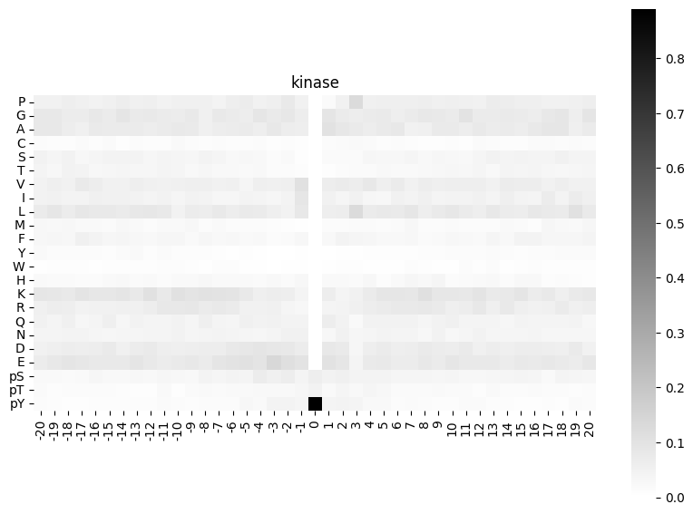
plot_heatmap
plot_heatmap (heatmap_df, ax=None, position_label=True, figsize=(5, 6), include_zero=True, scale_pos_neg=False, colorbar_title='Prob.')
Plots a heatmap with specific formatting.
This function visualizes a PSSM or log-odds matrix as a heatmap with diverging color scales centered at 0.
Color scale behavior:
By default (
scale_pos_neg=False), the colormap is centered at 0, but the full data range determines the color intensity:\[ \text{color range} = [\min(\text{data}), \max(\text{data})], \quad \text{with center at } 0 \]
This is useful when you want to emphasize whether values are above or below zero, but without enforcing symmetry.
If
scale_pos_neg=True, the function uses a balanced diverging scale viaTwoSlopeNorm, such that:\[ \text{min color} = \min(\text{data}), \quad \text{center} = 0, \quad \text{max color} = \max(\text{data}) \]
The positive and negative ranges are scaled separately, ensuring that both ends of the heatmap have equal visual weight — especially helpful for symmetric data like log-odds matrices.
Additional visual features: - The center position (\(i = 0\)) can be masked out using include_zero=False.
plot_heatmap(pssm_df-0.3,scale_pos_neg=False,figsize=(20, 6));
# plt.savefig('plot.svg',bbox_inches='tight')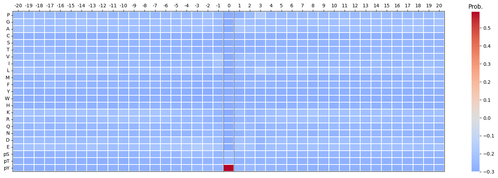
plot_heatmap(pssm_df-0.3,scale_pos_neg=True,figsize=(20, 6));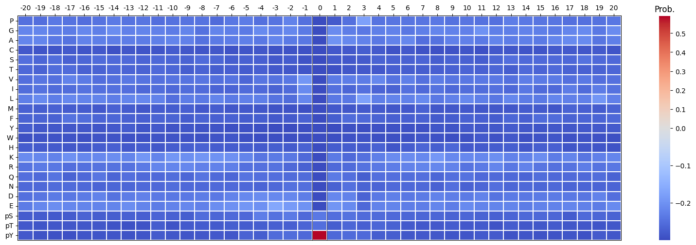
Logo motif
change_center_name
change_center_name (df)
Transfer the middle pS,pT,pY to S,T,Y for plot.
Now instead of pS, pT, and pY, the center name becomes S, T and Y:
change_center_name(pssm_df)[0].sort_values(ascending=False).head()aa
Y 0.890129
S 0.061692
T 0.048179
H 0.000000
pT 0.000000
Name: 0, dtype: float64get_pos_min_max
get_pos_min_max (pssm_df)
Get min and max value of sum of positive and negative values across each position.
scale_zero_position
scale_zero_position (pssm_df)
Scale position 0 so that: - Positive values match the max positive column sum of other positions - Negative values match the min (most negative) column sum of other positions
This function rescales position 0 in a log-odds PSSM so that its total positive and negative stack heights match those of the most extreme positions on either side.
This ensures the central position visually matches the dynamic range of surrounding positions in log-odds logo plots.
scale_pos_neg_values
scale_pos_neg_values (pssm_df)
Globally scale all positive values by max positive column sum, and negative values by min negative column sum (preserving sign).
convert_logo_df
convert_logo_df (pssm_df, scale_zero=True, scale_pos_neg=False)
Change center name from pS,pT,pY to S, T, Y in a pssm and scaled zero position to the max of neigbors.
plot_logo_raw
plot_logo_raw (pssm_df, ax=None, title='Motif', ytitle='Bits', figsize=(10, 2))
Plot logo motif using Logomaker.
plot_logo
plot_logo (pssm_df, title='Motif', scale_zero=True, ax=None, figsize=(10, 1))
Plot logo of information content given a frequency PSSM.
plot_logo(pssm_df,scale_zero=False,figsize=(10,1))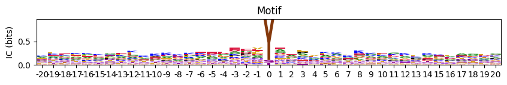
Set scale_zero to default True can have better vision of the side amino acids
plot_logo(pssm_df,figsize=(10,1))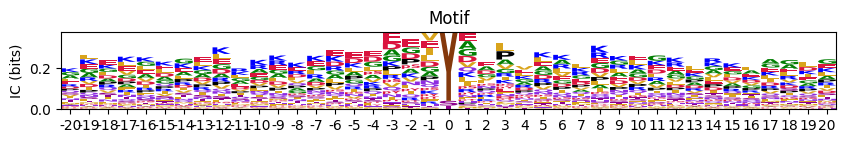
Logo motif of log-odds
plot_logo_LO
plot_logo_LO (pssm_LO, title='Motif', acceptor=None, scale_zero=True, scale_pos_neg=True, ax=None, figsize=(10, 1))
Plot logo of log-odds given a frequency PSSM.
To ensure the phosphorylated residue is visible at the center of a log-odds motif (position 0), two mechanisms are used:
Acceptor override: If the center column is entirely zero (e.g., masked), the user can specify an
acceptor('S','T','Y', or'STY'). The function then assigns a small nonzero value (e.g., 0.1) to the corresponding phospho-residue row (pS,pT,pY) at position 0. This ensures the central letter appears in the logo plot, even when real log-odds values are absent.Stack height rescaling: To maintain visual consistency with surrounding columns, position 0 is rescaled so that its total positive and negative stack heights match the most extreme values observed elsewhere.
Together, these adjustments ensure that: - The phospho-acceptor appears explicitly at the center, - The visual scale remains consistent with neighboring positions, - The resulting logo can faithfully reflect both biological relevance and statistical signal.
pssm_LO = get_pssm_LO(pssm_df,'STY')
plot_logo_LO(pssm_LO,scale_zero=False,scale_pos_neg=False)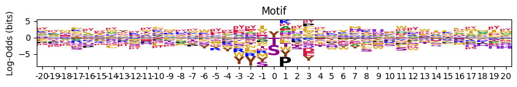
# with zero position scaled to the max
plot_logo_LO(pssm_LO,scale_zero=True,scale_pos_neg=False)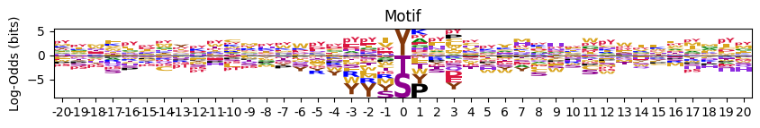
# scaled positive and negative values for better visualization
plot_logo_LO(pssm_LO,scale_zero=True,scale_pos_neg=True)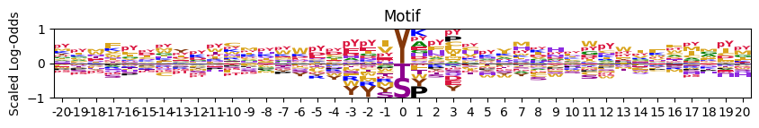
# for those specific site type (S,T or Y), show acceptor in the middle instead of empty
pssm_LO = get_pssm_LO(pssm_y,'Y')
plot_logo_LO(pssm_LO,acceptor='Y')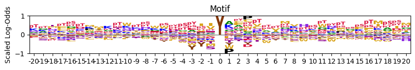
Multiple logos
plot_logos_idx
plot_logos_idx (pssms_df, *idxs)
Plot logos of a dataframe with flattened PSSMs with index ad IDs.
plot_logos
plot_logos (pssms_df, count_dict=None, path=None, prefix='Motif')
Plot all logos from a dataframe of flattened PSSMs as subplots in a single figure.
| Type | Default | Details | |
|---|---|---|---|
| pssms_df | |||
| count_dict | NoneType | None | used to display n in motif title |
| path | NoneType | None | |
| prefix | str | Motif |
# plot_logos(pssms_df)
# plt.show()
# plt.close()Logo motif + Heatmap
plot_logo_heatmap
plot_logo_heatmap (pssm_df, title='Motif', figsize=(17, 10), include_zero=False)
Plot logo and heatmap vertically
| Type | Default | Details | |
|---|---|---|---|
| pssm_df | column is position, index is aa | ||
| title | str | Motif | |
| figsize | tuple | (17, 10) | |
| include_zero | bool | False |
plot_logo_heatmap(pssm_df,'Kinase',(17,10))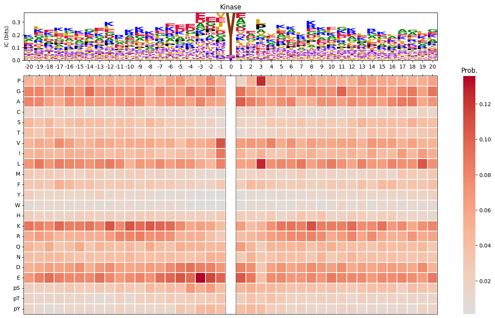
plot_logo_heatmap_LO
plot_logo_heatmap_LO (pssm_LO, title='Motif', acceptor=None, figsize=(17, 10), include_zero=False, scale_pos_neg=True)
Plot logo and heatmap of enrichment bits vertically
| Type | Default | Details | |
|---|---|---|---|
| pssm_LO | pssm of log-odds | ||
| title | str | Motif | |
| acceptor | NoneType | None | |
| figsize | tuple | (17, 10) | |
| include_zero | bool | False | |
| scale_pos_neg | bool | True |
plot_logo_heatmap_LO(pssm_LO,acceptor='Y')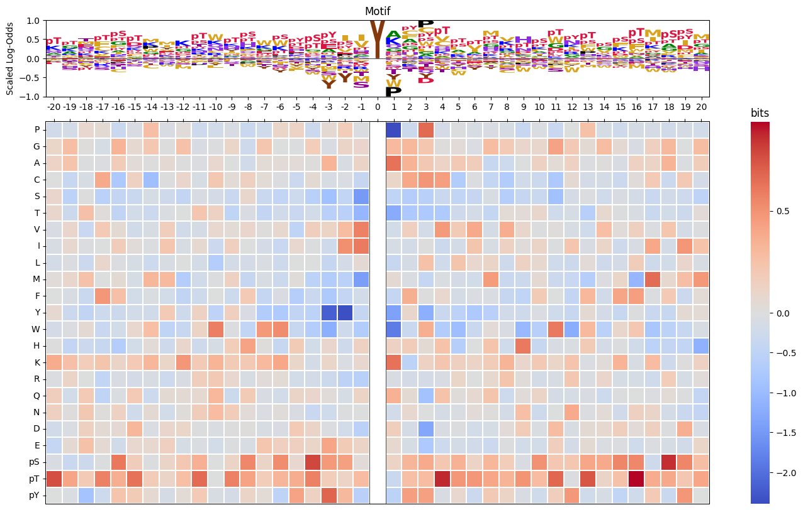
pssm_LO = get_pssm_LO(pssm_df,'STY')
plot_logo_heatmap_LO(pssm_LO,scale_pos_neg=False) # normal color scale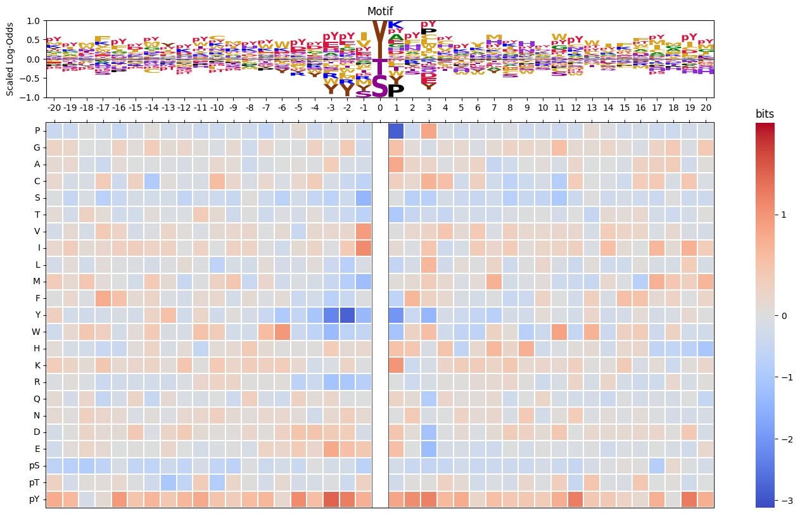
PSPA
Normalization
raw2norm
raw2norm (df:pandas.core.frame.DataFrame, PDHK:bool=False)
Normalize single ST kinase data
| Type | Default | Details | |
|---|---|---|---|
| df | DataFrame | single kinase’s df has position as index, and single amino acid as columns | |
| PDHK | bool | False | whether this kinase belongs to PDHK family |
This function implement the normalization method from Johnson et al. Nature: An atlas of substrate specificities for the human serine/threonine kinome
Specifically, > - matrices were column-normalized at all positions by the sum of the 17 randomized amino acids (excluding serine, threonine and cysteine), to yield PSSMs. >- PDHK1 and PDHK4 were normalized to the 16 randomized amino acids (excluding serine, threonine, cysteine and additionally tyrosine) >- The cysteine row was scaled by its median to be 1/17 (1/16 for PDHK1 and PDHK4). >- The serine and threonine values in each position were set to be the median of that position. >- The S0/T0 ratio was determined by summing the values of S and T rows in the matrix (SS and ST, respectively), accounting for the different S vs. T composition of the central (1:1) and peripheral (only S or only T) positions (Sctrl and Tctrl, respectively), and then normalizing to the higher value among the two (S0 and T0, respectively, Supplementary Note 1)
This function is usually implemented with the below function, with normalize being a bool argument.
get_one_kinase
get_one_kinase (df:pandas.core.frame.DataFrame, kinase:str, normalize:bool=False, drop_s:bool=True)
Obtain a specific kinase data from stacked dataframe
| Type | Default | Details | |
|---|---|---|---|
| df | DataFrame | stacked dataframe (paper’s raw data) | |
| kinase | str | a specific kinase | |
| normalize | bool | False | normalize according to the paper; special for PDHK1/4 |
| drop_s | bool | True | drop s as s is a duplicates of t in PSPA |
Retreive a single kinase data from PSPA data that has an format of kinase as index and position+amino acid as column.
data = Data.get_pspa_st_norm()get_one_kinase(data,'PDHK1')| aa | A | C | D | E | F | G | H | I | K | L | M | N | P | Q | R | S | T | V | W | Y | t | y |
|---|---|---|---|---|---|---|---|---|---|---|---|---|---|---|---|---|---|---|---|---|---|---|
| position | ||||||||||||||||||||||
| -5 | 0.0594 | 0.0625 | 0.0589 | 0.0550 | 0.0775 | 0.0697 | 0.0687 | 0.0590 | 0.0515 | 0.0657 | 0.0687 | 0.0613 | 0.0451 | 0.0424 | 0.0594 | 0.0594 | 0.0594 | 0.0573 | 0.1001 | 0.0775 | 0.0583 | 0.0658 |
| -4 | 0.0618 | 0.0621 | 0.0550 | 0.0511 | 0.0739 | 0.0715 | 0.0598 | 0.0601 | 0.0520 | 0.0614 | 0.0744 | 0.0549 | 0.0637 | 0.0552 | 0.0617 | 0.0608 | 0.0608 | 0.0519 | 0.0916 | 0.0739 | 0.0528 | 0.0752 |
| ... | ... | ... | ... | ... | ... | ... | ... | ... | ... | ... | ... | ... | ... | ... | ... | ... | ... | ... | ... | ... | ... | ... |
| 3 | 0.0486 | 0.0609 | 0.0938 | 0.0684 | 0.1024 | 0.0676 | 0.0544 | 0.0583 | 0.0388 | 0.0552 | 0.0637 | 0.0505 | 0.0686 | 0.0502 | 0.0561 | 0.0588 | 0.0588 | 0.0593 | 0.0641 | 0.1024 | 0.0539 | 0.0431 |
| 4 | 0.0565 | 0.0749 | 0.0631 | 0.0535 | 0.0732 | 0.0655 | 0.0664 | 0.0625 | 0.0496 | 0.0552 | 0.0627 | 0.0640 | 0.0677 | 0.0553 | 0.0604 | 0.0626 | 0.0626 | 0.0579 | 0.0864 | 0.0732 | 0.0548 | 0.0575 |
10 rows × 22 columns
Plot PSPA logo motif
get_logo
get_logo (df:pandas.core.frame.DataFrame, kinase:str)
Given stacked df (index as kinase, columns as substrates), get a specific kinase’s logo
| Type | Details | |
|---|---|---|
| df | DataFrame | stacked Dataframe with kinase as index, substrates as columns |
| kinase | str | a specific kinase name in index |
This function is to replicate the motif logo from Johnson et al. Nature: An atlas of substrate specificities for the human serine/threonine kinome. Given raw PSPA data, it can output a motif logo.
# load raw PSPA data
df = pd.read_csv('https://github.com/sky1ove/katlas_raw/raw/refs/heads/main/nbs/raw/pspa_st_raw.csv').set_index('kinase')
df.head()| -5P | -5G | -5A | -5C | -5S | -5T | -5V | -5I | -5L | -5M | -5F | -5Y | -5W | -5H | -5K | -5R | -5Q | -5N | -5D | -5E | -5s | -5t | -5y | -4P | -4G | -4A | -4C | -4S | -4T | -4V | -4I | -4L | -4M | -4F | -4Y | -4W | -4H | -4K | -4R | -4Q | -4N | -4D | -4E | -4s | -4t | -4y | -3P | -3G | -3A | -3C | ... | 2E | 2s | 2t | 2y | 3P | 3G | 3A | 3C | 3S | 3T | 3V | 3I | 3L | 3M | 3F | 3Y | 3W | 3H | 3K | 3R | 3Q | 3N | 3D | 3E | 3s | 3t | 3y | 4P | 4G | 4A | 4C | 4S | 4T | 4V | 4I | 4L | 4M | 4F | 4Y | 4W | 4H | 4K | 4R | 4Q | 4N | 4D | 4E | 4s | 4t | 4y | |
|---|---|---|---|---|---|---|---|---|---|---|---|---|---|---|---|---|---|---|---|---|---|---|---|---|---|---|---|---|---|---|---|---|---|---|---|---|---|---|---|---|---|---|---|---|---|---|---|---|---|---|---|---|---|---|---|---|---|---|---|---|---|---|---|---|---|---|---|---|---|---|---|---|---|---|---|---|---|---|---|---|---|---|---|---|---|---|---|---|---|---|---|---|---|---|---|---|---|---|---|---|---|
| kinase | |||||||||||||||||||||||||||||||||||||||||||||||||||||||||||||||||||||||||||||||||||||||||||||||||||||
| AAK1 | 7614134.38 | 2590563.43 | 3001315.49 | 4696631.43 | 4944311.77 | 8315837.72 | 10056545.00 | 16433061.43 | 10499735.53 | 9133577.86 | 4493053.86 | 10062728.22 | 3327454.51 | 3504742.95 | 2767294.24 | 10105742.33 | 5923673.04 | 2909152.87 | 1695155.97 | 1617848.59 | 2128670.48 | 2128670.48 | 6460994.89 | 5260312.92 | 6325834.43 | 6957993.77 | 5369434.90 | 5713920.54 | 6612201.68 | 6093662.03 | 6120308.98 | 7306988.18 | 6829677.84 | 5119221.55 | 5263235.93 | 3974771.07 | 5065007.89 | 7968511.43 | 7041049.08 | 6174443.51 | 4228327.20 | 3271230.67 | 5511933.84 | 3267817.62 | 3267817.62 | 3338569.94 | 8921287.46 | 4210322.63 | 9202467.84 | 5247517.95 | ... | 5087031.12 | 3976345.18 | 3976345.18 | 3984759.21 | 7873214.56 | 10666925.10 | 6726092.35 | 8347110.75 | 8474126.59 | 36243425.13 | 7049439.08 | 4480458.41 | 5646461.38 | 5049205.04 | 4966940.21 | 6154422.64 | 5554384.65 | 7784625.71 | 8536454.84 | 10411516.21 | 7199439.88 | 8496115.61 | 4678462.79 | 4293019.55 | 3871242.35 | 3871242.35 | 4144314.24 | 6754640.94 | 7548893.13 | 6945441.59 | 6316583.85 | 5852227.64 | 11986373.78 | 4544765.44 | 4468425.80 | 4958371.35 | 4992757.20 | 5630292.14 | 5605199.37 | 8889242.83 | 6020662.73 | 8938081.41 | 9983402.01 | 6833481.55 | 6364453.29 | 4189045.89 | 4921595.57 | 2705053.53 | 2705053.53 | 2909279.71 |
| ACVR2A | 4991039.28 | 5783855.86 | 7015770.78 | 8367603.09 | 7072052.48 | 7601399.57 | 7188292.41 | 7513915.73 | 7159894.71 | 6266122.81 | 7217726.01 | 6944709.95 | 9655463.75 | 6855044.90 | 6135259.88 | 5714942.29 | 5174360.28 | 6446237.55 | 10676798.47 | 9490370.51 | 9417512.45 | 9417512.45 | 9143262.67 | 5189500.90 | 6115977.27 | 6183207.45 | 8746774.91 | 8620216.35 | 8958568.82 | 6057960.27 | 5865979.65 | 5795429.17 | 6425254.28 | 6896823.79 | 6528270.38 | 8404648.40 | 6144455.59 | 4524121.26 | 5095303.46 | 5374811.94 | 5585576.72 | 11592053.32 | 9685649.12 | 9011965.48 | 9011965.48 | 7594632.10 | 5362570.64 | 6972103.63 | 5730145.40 | 8939563.00 | ... | 6089086.81 | 6553062.94 | 6553062.94 | 5204999.87 | 6765402.33 | 5981896.69 | 5346578.80 | 6919984.14 | 7959489.88 | 7230276.28 | 5724908.70 | 5600557.92 | 6186548.03 | 5952584.60 | 6508513.22 | 6613614.54 | 6419485.14 | 5958101.56 | 4666926.40 | 3909037.15 | 5041118.65 | 5297856.53 | 6281516.23 | 8795439.82 | 5241575.71 | 5241575.71 | 8237893.33 | 7993593.88 | 5729648.65 | 5252569.87 | 7759899.88 | 5847330.49 | 6832130.05 | 5439639.57 | 5935276.66 | 5396841.45 | 6976824.69 | 5517910.17 | 6107147.03 | 8435953.93 | 6039472.76 | 5556300.56 | 5178734.62 | 6490097.70 | 5862480.97 | 6742905.78 | 6750653.36 | 7414220.16 | 7414220.16 | 6209576.97 |
| ACVR2B | 26480329.10 | 25689687.16 | 28137300.90 | 45175909.30 | 32876722.90 | 33516959.03 | 27011194.06 | 21996255.94 | 23412987.54 | 25670581.40 | 30029680.93 | 30172687.84 | 35861732.85 | 25743398.12 | 21466618.54 | 23457282.42 | 24765933.65 | 29600378.31 | 52942189.79 | 44756418.68 | 37869524.53 | 37869524.53 | 36929423.91 | 26315617.68 | 30726667.27 | 28226685.89 | 38126762.75 | 43013450.33 | 42772589.49 | 25461877.69 | 22496529.73 | 25367364.10 | 24579622.29 | 30632363.88 | 29811628.74 | 34569034.39 | 29901290.43 | 18566682.92 | 18058410.71 | 24160712.63 | 28003909.47 | 50383510.79 | 42873444.64 | 38601826.06 | 38601826.06 | 41781415.03 | 21589896.66 | 25896930.06 | 25366399.23 | 32391161.86 | ... | 28198813.13 | 38385326.47 | 38385326.47 | 28511534.88 | 32570983.87 | 30150790.48 | 26899530.88 | 30059325.25 | 38558739.93 | 36859921.47 | 27039358.24 | 27590185.37 | 32159022.90 | 28530956.88 | 26440586.17 | 32902030.17 | 31106381.62 | 23931820.75 | 17025117.96 | 21234075.57 | 24959228.30 | 24492089.19 | 27379743.65 | 34799587.30 | 29745626.40 | 29745626.40 | 32930899.01 | 35872341.41 | 28942663.95 | 32630294.18 | 32307682.27 | 29351484.80 | 32158594.62 | 27585750.22 | 27087769.55 | 26427108.32 | 26008460.67 | 24006599.74 | 29260306.53 | 39105460.91 | 27984195.21 | 22496915.32 | 24236904.72 | 29132857.30 | 26527389.14 | 36388726.15 | 34729319.54 | 37906081.09 | 37906081.09 | 31761418.56 |
| AKT1 | 18399509.29 | 18104681.05 | 16831835.48 | 17247743.90 | 22647275.57 | 17801288.32 | 13037570.99 | 13271896.32 | 14156489.52 | 15409761.84 | 16671963.73 | 15742204.09 | 16027501.16 | 19907160.04 | 28966209.27 | 46308665.22 | 14988023.16 | 14258599.40 | 11464166.24 | 11466588.37 | 12987224.59 | 12987224.59 | 13061088.75 | 19398931.56 | 22044179.39 | 19063613.39 | 16798065.92 | 24561075.64 | 21053645.01 | 16134289.55 | 14065393.27 | 15980319.99 | 19175233.16 | 15650650.91 | 16726542.08 | 20714995.14 | 21727731.71 | 39387269.30 | 58649797.06 | 19398853.50 | 17142314.75 | 12090323.96 | 14986249.30 | 16353759.94 | 16353759.94 | 14758361.18 | 13509722.97 | 12072788.52 | 14485106.48 | 13140602.43 | ... | 7899072.12 | 9884167.72 | 9884167.72 | 12951695.66 | 19773952.19 | 28710820.58 | 19788527.29 | 24659376.30 | 38048939.96 | 28284495.88 | 18552859.18 | 19892556.30 | 19599278.84 | 19914391.75 | 24525110.15 | 23248076.40 | 22854369.53 | 30978724.22 | 37068344.22 | 45991399.36 | 22887074.13 | 25185236.76 | 11842652.96 | 12741276.18 | 13591360.01 | 13591360.01 | 13703183.16 | 41007225.21 | 26477432.58 | 21719674.69 | 20203616.26 | 38961301.73 | 32270913.63 | 18364889.10 | 16918422.73 | 20570253.26 | 20228125.32 | 17323199.08 | 15512400.43 | 23151572.85 | 29511541.69 | 50942663.29 | 48152924.11 | 32693882.62 | 28896602.57 | 19701350.30 | 13887460.52 | 17483074.60 | 17483074.60 | 11696833.54 |
| AKT2 | 5439237.54 | 5569477.23 | 5805462.70 | 6301076.01 | 5004932.12 | 4812022.80 | 3906822.27 | 3776845.45 | 4450344.85 | 4629319.80 | 4945257.93 | 4922327.73 | 4818865.35 | 5502849.58 | 8846468.40 | 13331891.81 | 4466206.11 | 4288906.37 | 2757476.64 | 2846855.07 | 4120973.53 | 4120973.53 | 4296409.60 | 5553404.98 | 6777166.70 | 6560098.67 | 6582761.90 | 5632446.40 | 5626768.67 | 4006942.83 | 3777456.81 | 4557921.65 | 5073875.76 | 3998927.33 | 4589150.59 | 3853565.73 | 5877347.98 | 11323980.56 | 13410263.75 | 5637101.36 | 5224016.00 | 3264181.56 | 3696233.79 | 4296297.38 | 4296297.38 | 3662821.27 | 2964033.65 | 3057508.32 | 4553667.71 | 5296786.48 | ... | 2833442.97 | 5420413.57 | 5420413.57 | 5570730.59 | 5492323.72 | 6803045.82 | 5712262.24 | 8338449.42 | 6916137.16 | 5765528.76 | 3987390.37 | 3310626.06 | 4606344.89 | 3944710.78 | 4615743.61 | 4760316.90 | 4766437.21 | 7463546.47 | 9581858.17 | 9777288.15 | 5173060.60 | 4932877.74 | 3157981.08 | 3133584.99 | 4337162.19 | 4337162.19 | 5399811.38 | 9707178.16 | 7244546.68 | 5450860.89 | 7077129.19 | 7739122.90 | 7823932.94 | 3778464.64 | 4053742.59 | 4346509.71 | 4803778.43 | 4018212.65 | 4513237.41 | 4161648.84 | 6812201.58 | 11590683.50 | 9932525.89 | 6544476.93 | 6252360.75 | 3629091.99 | 3510048.19 | 5499662.30 | 5499662.30 | 4188620.88 |
5 rows × 207 columns
# plot logo of a kinase
get_logo(df, 'AAK1')